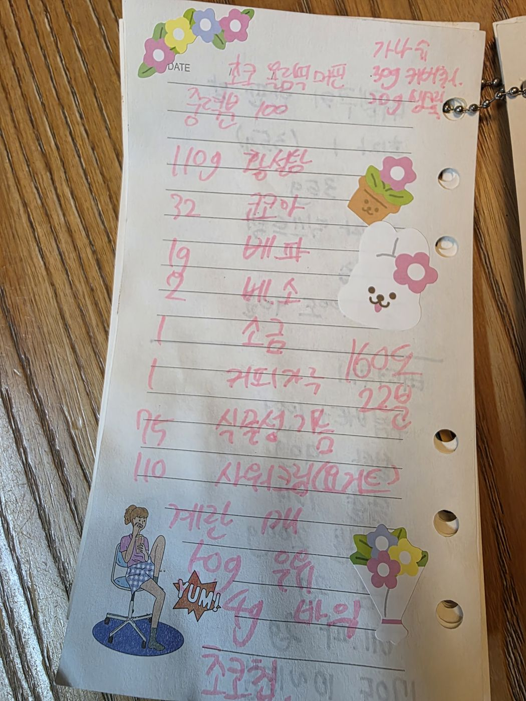

← 전체 레시피
머핀·번
🧁 초코 머핀
손으로 적은 노트를 그대로 옮긴 레시피입니다.
📝 원본 노트의 제목 가운데 글자가 흐릿해 '초코 머핀'으로 정리했습니다. 원본 사진을 함께 확인해 주세요.
📷 원본 노트 사진 보기
재료
가루
- 중력분 100g
- 황설탕 110g
- 코코아 32g
- 베이킹파우더 1g
- 베이킹소다 2g
- 소금 1g
- 커피가루 1g
액체
- 식용유 75g
- 사워크림(또는 요거트) 110g
- 계란 1개
- 우유 50g
- 바닐라 4g
- 초코칩
가나슈
만드는 법
- 가루 재료를 모두 섞는다.
- 액체 재료를 섞어 가루에 넣고 날가루가 보이지 않을 정도로만 섞는다.
- 초코칩을 섞는다.
- 160℃에서 22분 굽는다.
- 가나슈(커버춰 30g + 생크림 20g)를 올린다.

원본 노트 사진 — 탭하면 크게 볼 수 있어요